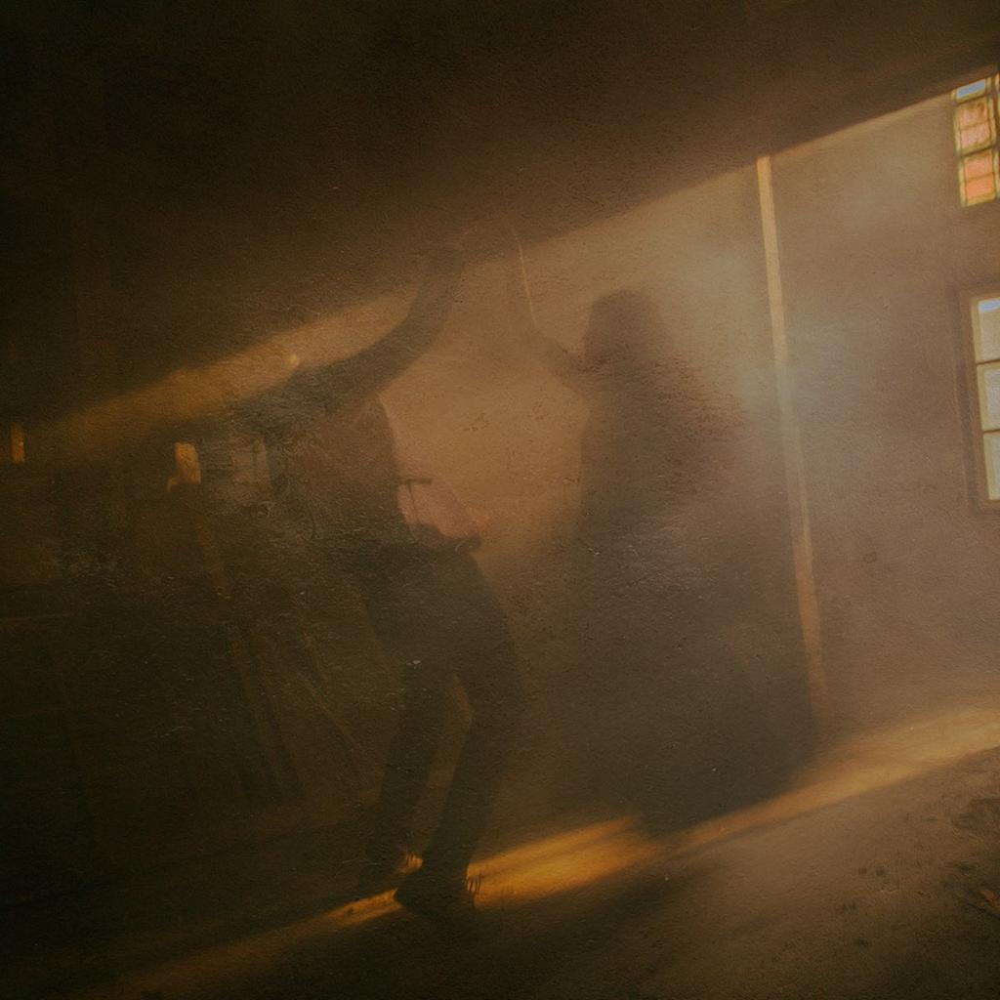
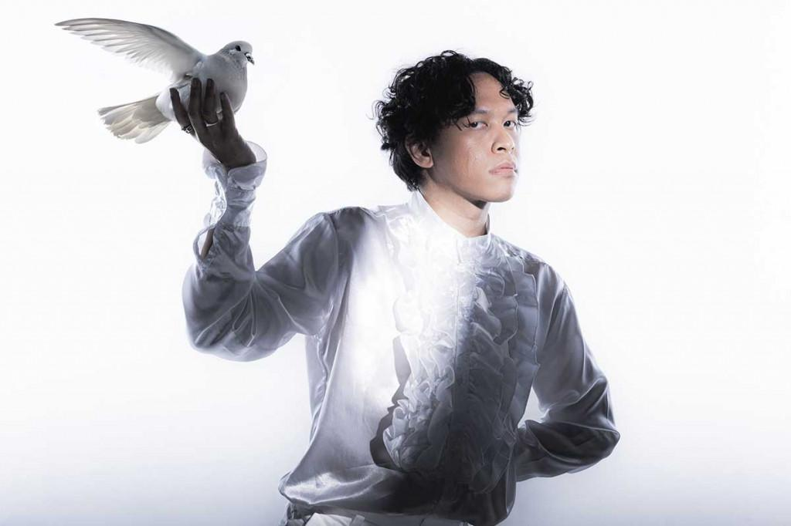
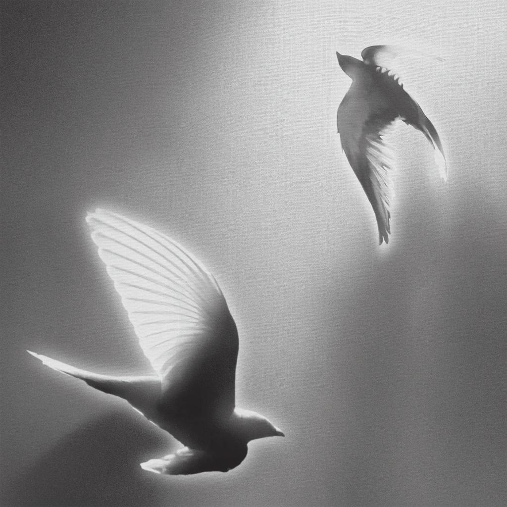
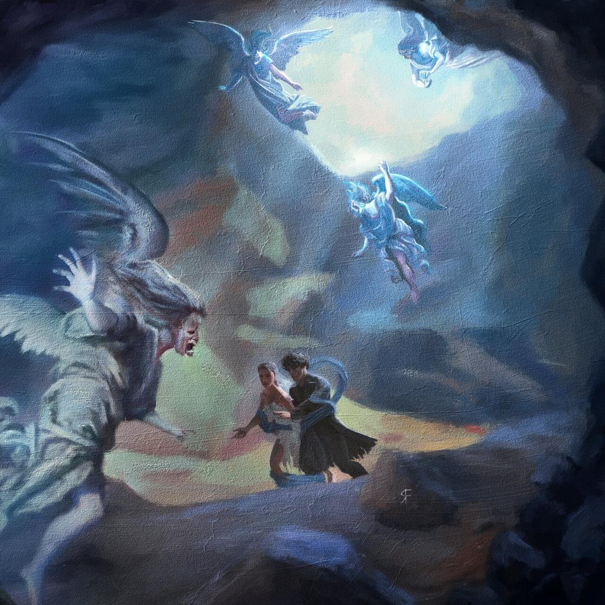

Hindia, proyek solo dari Baskara Putra, hadir sebagai penawar rindu sekaligus teman setia bagi jiwa-jiwa muda yang lelah merajut asa di tengah bisingnya ibu kota. Melalui balutan musik pop alternatif yang memadukan melodi melankolis, sentuhan synth elektronik yang hangat, serta aransemen yang jujur, ia merangkum setiap keresahan eksistensial menjadi kidung yang menenangkan. Setiap lagu terasa seperti ruang aman untuk merayakan lelah, menerima luka, dan memeluk ketidakpastian hidup dengan lapang dada.
Karya-karya Hindia beresonansi sangat kuat dengan denyut nadi Gen Z—generasi yang tumbuh di antara cemasnya masa depan dan riuhnya tuntutan zaman. Dengan lirik yang puitis, membumi, dan apa adanya, ia menyuarakan isi kepala mereka yang sering kali tak tersampaikan, mulai dari kesehatan mental hingga pencarian makna hidup. Di tangan Hindia, kesedihan tidak pernah dihakimi, melainkan dirayakan bersama, menjadikannya suara generasi yang tulus dan abadi di hati para pendengarnya.
2.5M
Spotify Followers
1.8M
Monthly Listeners
3
Official Albums
Discography

Doves, '25 on Blank Canvas
Listen Now